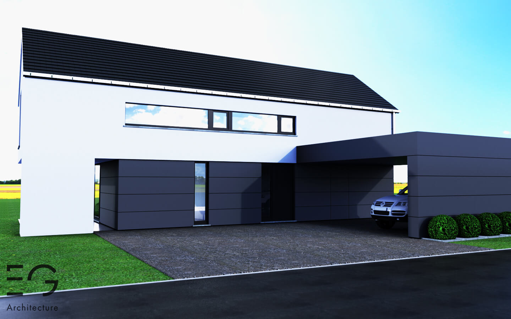

Le projet consiste à construire, sur un terrain situé dans le village de Petit-Han, une habitation unifamiliale. Le logement est implanté le long de la voirie afin de bénéficier au maximum de l'orientation propice de la parcelle. Seul le car-port prenant place à l'avant de celui-ci rompt ce parallélisme.
La volumétrie découle de la volonté des clients de bénéficier à l'étage de trois chambres spacieuses et d'un bureau ouvert sur l'espace du séjour. La superficie des pièces de nuit étant plus importante que celle des pièces de vie du rez-de-chaussée, il a été décidé de prolonger le volume supérieur couvrant ainsi une partie de la terrasse.

Le séjour est entièrement ouvert sur l'extérieur et orienté au Sud. La double hauteur présente dans la salle à manger permet d'ouvrir l'espace et d'avoir une vue depuis le bureau aménagé sur le palier de l'étage.
Projet précédent Projet suivant